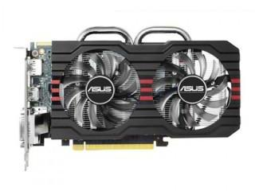

Graphics Card

A Graphics Card, also known as a GPU (Graphics Processing Unit), is a critical component in computers, responsible for rendering images, video, and animations for the display. It performs complex calculations to create visuals and is vital for gaming, video editing, and professional applications like 3D modeling, AI tasks, and even virtual reality. Modern GPUs are designed to handle high-resolution displays, ray tracing for realistic lighting, and advanced AI-based image enhancements.
History of Graphics Cards
Graphics cards have evolved from simple video output devices into highly advanced processors capable of parallel computation. The first true graphics cards were released in the early 1980s, with companies like ATI, NVIDIA, and 3Dfx leading the charge in the development of 3D rendering. Today, GPUs are used not only for gaming but also for scientific research, cryptocurrency mining, and powering AI models. Modern GPUs are smaller, faster, and more energy-efficient, making them suitable for a wide range of devices, from desktops to laptops and even smartphones.
Types of Graphics Cards
- Discrete Graphics Cards: These cards are standalone units that connect to the motherboard via PCI Express slots. They are equipped with dedicated memory (VRAM) for high performance in rendering and processing visuals. Modern discrete GPUs support technologies like ray tracing, DLSS (Deep Learning Super Sampling), and 4K gaming.
- Integrated Graphics Cards: These are built into the CPU or motherboard and share the system’s RAM. While more cost-effective, integrated graphics cards are less powerful than discrete ones and not ideal for demanding tasks like gaming or 3D rendering. However, modern integrated GPUs, like Intel Iris Xe and AMD Radeon Vega, are capable of handling casual gaming and 4K video playback.
- External Graphics Cards: These GPUs are connected externally to laptops or other systems through high-speed interfaces like Thunderbolt. They offer enhanced graphics performance to portable devices without upgrading internal components. External GPUs are popular among content creators and gamers who need portability and power.
How a Graphics Card Works
The graphics card is designed to handle the complex mathematics involved in image processing, including transformations, lighting effects, shading, and rendering. It works by receiving data from the CPU about what should be displayed on the screen, such as textures, geometry, and animations. Then, the GPU processes this data using its many cores to handle multiple calculations simultaneously, which results in the smooth rendering of images, videos, and games on the screen. Modern GPUs also support AI-based features like upscaling and noise reduction, making visuals sharper and more detailed.
The core of a graphics card is its GPU, which is a massively parallel processor capable of performing thousands of simultaneous calculations. The GPU also uses VRAM (Video Random Access Memory), a high-speed memory used exclusively by the graphics card to store textures, frame buffers, and other data needed for rendering visuals quickly and efficiently. Modern GPUs come with GDDR6 or GDDR6X memory, which offers faster speeds and better performance for demanding applications.
Applications of Graphics Cards
- Gaming: High-performance graphics cards are crucial for rendering high-quality graphics in video games, providing smoother gameplay, realistic visuals, and support for technologies like ray tracing and VR gaming.
- Video Editing: Graphics cards accelerate the process of rendering high-definition video, applying visual effects, and encoding videos, significantly speeding up editing workflows. Modern GPUs also support AI-based tools for color grading and motion tracking.
- 3D Modeling and Rendering: For professionals in industries like architecture, animation, and game development, graphics cards are used to render 3D models and visual effects in real-time, enabling faster project iterations.
- Machine Learning and AI: With the rise of deep learning, GPUs are increasingly used to accelerate training algorithms for AI models, as they can perform thousands of operations at once. GPUs are essential for tasks like image recognition, natural language processing, and autonomous driving.
- Cryptocurrency Mining: The parallel processing power of graphics cards makes them ideal for cryptocurrency mining, where large-scale computations are necessary. Modern GPUs are optimized for energy efficiency to reduce mining costs.
- Streaming and Content Creation: GPUs are used to encode live streams, apply real-time effects, and enhance video quality, making them essential for content creators on platforms like YouTube and Twitch.
Popular Graphics Card Manufacturers
- NVIDIA: A leader in the GPU market, known for its GeForce, Quadro, and Tesla series of graphics cards. NVIDIA’s GPUs are widely used in gaming, AI, and professional workstations. Their latest RTX series supports ray tracing, DLSS, and AI-enhanced features.
- AMD: Another top player in the GPU market, AMD produces Radeon graphics cards, which are popular for gaming and high-performance computing. AMD is known for offering good value for money and supports technologies like FidelityFX Super Resolution (FSR) for enhanced visuals.
- Intel: While historically not a major player in the dedicated graphics card market, Intel has begun producing discrete GPUs with its Intel Arc series, aiming to compete with NVIDIA and AMD. Intel GPUs focus on gaming, AI, and content creation at competitive prices.
Importance of Graphics Cards
Graphics cards are indispensable in today's computing world, particularly for tasks that require high visual performance. Whether for gaming, video editing, 3D rendering, or AI workloads, a high-quality GPU can make a significant difference in the speed and quality of the tasks you perform. Modern GPUs are also essential for emerging technologies like virtual reality, augmented reality, and real-time ray tracing. With the continuous improvement of GPU technology, these components are becoming even more powerful and versatile, serving a broader range of applications beyond just graphics rendering. They are also becoming more energy-efficient, making them suitable for both high-performance and eco-friendly computing.